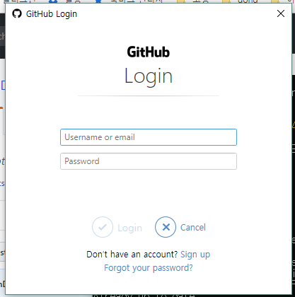

d드라이브로 경로를 이동합니다
d 드라이브 내 HelloGit이라는 이름의 폴더를 새로 만듭니다
HelloGit 폴더의 정보를 출력합니다
HelloGit 폴더로 진입합니다
exam01이라는 txt 파일을 생성합니다
exam01.txt를 실행합니다
실행한 파일에 "test1" 이라고 입력한 후, txt파일을 종료합니다
다시 dir을 입력하면 0이던 파일 용량이 달라진 것을 확인할 수 있습니다
현재 위치(HelloGit)를 git 저장소로 설정합니다
git 저장소로 설정된 HelloGit 폴더의 현재 상태를 출력합니다
최근 수정한 exam01.txt가 붉은색으로 표시되는 것을 확인할 수 있습니다
수정한 파일인 exam01.txt를 에 저장시킵니다
수량이 많은 경우 git add * 라는 명령어로 한꺼번에 저장시킬 수 있습니다
커밋을 진행합니다
'file added 19.6.13'은 기록용이므로 마음대로 기재해도 됩니다
이 과정을 끝낸 후 다시 git status를 입력하면 'nothing to commit, working tree clean'라고 출력되는 것을 확인할 수 있습니다
로그를 확인하면, 숫자와 알파벳으로 이루어진 코드를 가진 로그가 생성된 것을 확인할 수 있습니다
D:\HelloGit>git init
Initialized empty Git repository in D:/HelloGit/.git/D:\HelloGit>git status
On branch masterexam01.txt
D:\HelloGit>git add exam01.txt
D:\HelloGit>git commit -m "file added 19.6.13"
[master (root-commit) 4d6ebc3] file added 19.6.13D:\HelloGit>git status
On branch masterD:\HelloGit>git log
commit 4debc3220267bcd1296adf4544b (HEAD -> master)아이디를 입력합니다
유저 네임을 입력합니다(아무거나 입력해도 됩니다)
그리고 아래 화면이 뜨면 로그인 합니다
D:\HelloGit>git config --global user.email "vsevolod117@gmail.com"
D:\HelloGit>git config --global user.name "Jonah"
리파지트리 메뉴를 클릭합니다
new를 눌러 새 리파지트리를 만듭니다
리파지트리 이름을 쓰고, README란을 체크하고, 생성 버튼을 누릅니다
아래처럼 만들어진 리파지트리를 확인할 수 있습니다
이 리파지트리를 삭제하려면 setting 메뉴를 누릅니다
맨 아래로 내려서 Delete버튼을 클릭합니다
리파지트리 이름을 정확히 기재한 후 삭제버튼을 누릅니다
현재 위치(HelloGit)를 git 저장소로 설정합니다
git 저장소로 설정된 HelloGit 폴더의 현재 상태를 출력합니다
최근 수정한 exam01.txt가 붉은색으로 표시되는 것을 확인할 수 있습니다
수정한 파일인 exam01.txt를 에 저장시킵니다
수량이 많은 경우 git add * 라는 명령어로 한꺼번에 저장시킬 수 있습니다
커밋을 진행합니다
'file added 19.6.13'은 기록용이므로 마음대로 기재해도 됩니다
이 과정을 끝낸 후 다시 git status를 입력하면 'nothing to commit, working tree clean'라고 출력되는 것을 확인할 수 있습니다
로그를 확인하면, 숫자와 알파벳으로 이루어진 코드를 가진 로그가 생성된 것을 확인할 수 있습니다
D:\HelloGit>git init
Initialized empty Git repository in D:/HelloGit/.git/D:\HelloGit>git status
On branch masterexam01.txt
D:\HelloGit>git add exam01.txt
D:\HelloGit>git commit -m "file added 19.6.13"
[master (root-commit) 4d6ebc3] file added 19.6.13D:\HelloGit>git status
On branch masterD:\HelloGit>git log
commit 4debc3220267bcd1296adf4544b (HEAD -> master)